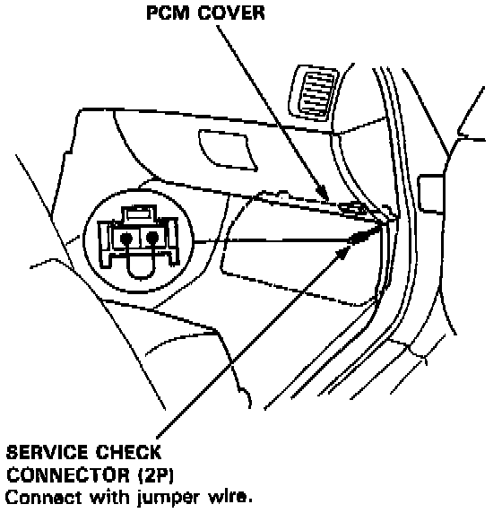

Displaying & Reading Trouble Codes
When the Powertrain Control Module (PCM) senses an abnormality in the input or output systems, the [D4] indicator light in the gauge assembly will blink. However, when the Service Check Connector (located on the PCM cover) is connected with a jumper wire, the [D4] indicator light will blink the Diagnostic Trouble Code (DTC) when the ignition switch is turned on.


When the [D4] indicator light has been reported on, connect the two terminals of the Service Check Connector together. Then turn on the ignition switch and observe the [D4] indicator light.

Codes 1 through 9 are indicated by individual short blinks, codes 10 through 17 are indicated by a series of long and short blinks. One long blink equals 10 short blinks. Add the long and short blinks together to determine the code. After determining the code, refer to the electrical system Symptom-to-Component Chart.
Some PGM-FI problems will also make the [D4] indicator light come on. After repairing the PGM-FI system, disconnect the No. 15: ACG (S) fuse (7.5 A) in the under-dash fuse box for more than 10 seconds to reset the PCM memory.